अध्याय 5 : जैव प्रक्रम
Class 10 Science | Life Processes
परिभाषा (Definition): वे सभी प्रक्रम जो सम्मिलित रूप से जीवों के अनुरक्षण (Maintenance) का कार्य करते हैं, जैव प्रक्रम (Life Processes) कहलाते हैं।
मुख्य प्रक्रम (Core Processes)
जीवन के अनुरक्षण के लिए निम्नलिखित प्रक्रम आवश्यक हैं:
- पोषण (Nutrition): ऊर्जा के स्रोत (भोजन) को शरीर के अंदर लेने का प्रक्रम।
- श्वसन (Respiration): शरीर के बाहर से ऑक्सीजन (O₂) ग्रहण करना तथा कोशिकीय आवश्यकता के अनुसार खाद्य स्रोत के विघटन (Breakdown) में उसका उपयोग करना।
- वहन (Transportation): भोजन एवं ऑक्सीजन को शरीर के एक स्थान से दूसरे स्थान तक ले जाने के लिए वहन-तंत्र (Circulatory System)।
- उत्सर्जन (Excretion): हानिकारक अपशिष्ट उपोत्पादों (Toxic Waste Products) को शरीर से बाहर निकालना।
जीवों को वृद्धि, विकास और प्रोटीन संश्लेषण (Protein Synthesis) के लिए बाहर से पदार्थों और ऊर्जा की आवश्यकता होती है, जिसका स्रोत भोजन (Food) है।
🧬 पोषण के प्रकार (Types of Nutrition)
-
स्वपोषी पोषण (Autotrophic Nutrition):
- इसमें जीव अकार्बनिक स्रोतों (Inorganic Sources) से CO₂ तथा जल (H₂O) के रूप में सरल पदार्थ प्राप्त करते हैं।
- उदाहरण: सभी हरे पौधे (Green Plants) तथा कुछ जीवाणु (Bacteria)।
-
विषमपोषी पोषण (Heterotrophic Nutrition):
- इसमें जीव जटिल पदार्थों (Complex Substances) का उपयोग करते हैं, जिन्हें एंजाइम (Enzymes / जैव-उत्प्रेरक) की मदद से सरल पदार्थों में खंडित किया जाता है।
- उदाहरण: जंतु (Animals) तथा कवक (Fungi)।
स्वपोषी जीवों की कार्बन तथा ऊर्जा की आवश्यकताएँ प्रकाश संश्लेषण (Photosynthesis) द्वारा पूरी होती हैं।
↓
क्लोरोफिल + सूर्य का प्रकाश
↓
C₆H₁₂O₆ (ग्लूकोज) + 6O₂ + 6H₂O
प्रकाश संश्लेषण के दौरान होने वाली घटनाएँ (Main Events)
- क्लोरोफिल द्वारा प्रकाश ऊर्जा (Light Energy) को अवशोषित (Absorb) करना।
- प्रकाश ऊर्जा को रासायनिक ऊर्जा (Chemical Energy) में रूपांतरित करना तथा जल अणुओं का हाइड्रोजन तथा ऑक्सीजन में अपघटन (Splitting of Water)।
- कार्बन डाइऑक्साइड (CO₂) का कार्बोहाइड्रेट (Glucose) में अपचयन (Reduction)।
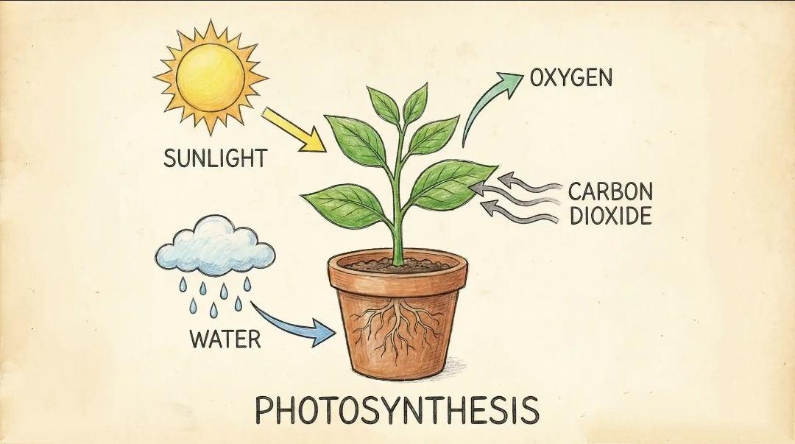
चित्र: प्रकाश संश्लेषण (Photosynthesis Diagram)ऊर्जा का संचय (Storage of Energy)
- पौधों में: कार्बोहाइड्रेट मंड (Starch) के रूप में संचित होता है।
- मनुष्यों में: खाए गए भोजन से उत्पन्न ऊर्जा ग्लाइकोजन (Glycogen) के रूप में संचित होती है।
रंध्र (Stomata) का कार्य
- पत्तियों की सतह पर सूक्ष्म छिद्र (Microscopic Pores) होते हैं जिनसे गैसों का आदान-प्रदान (Exchange of Gases) होता है।
- छिद्रों का खुलना और बंद होना द्वार कोशिकाओं (Guard Cells) के फूलने और सिकुड़ने पर निर्भर करता है।
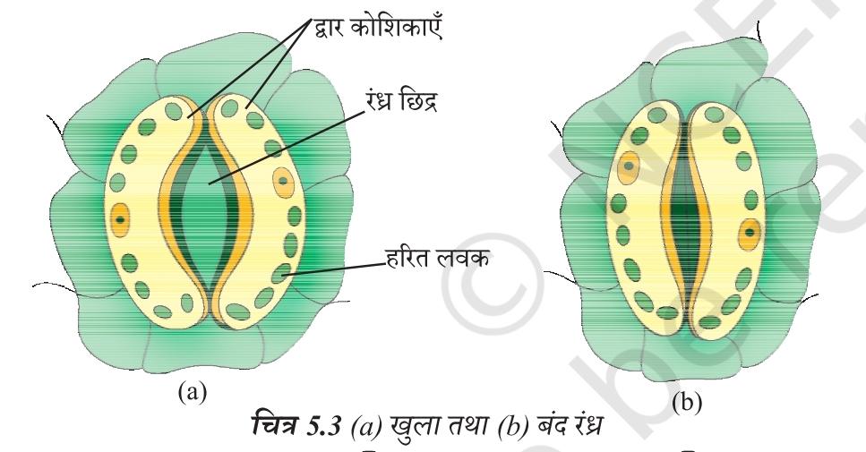
चित्र: रंध्र (Stomata) तथा द्वार कोशिकाएँ (Guard Cells)अमीबा एककोशिकीय जीव (Unicellular Organism) है जो अपनी पूरी सतह से भोजन ग्रहण कर सकता है।
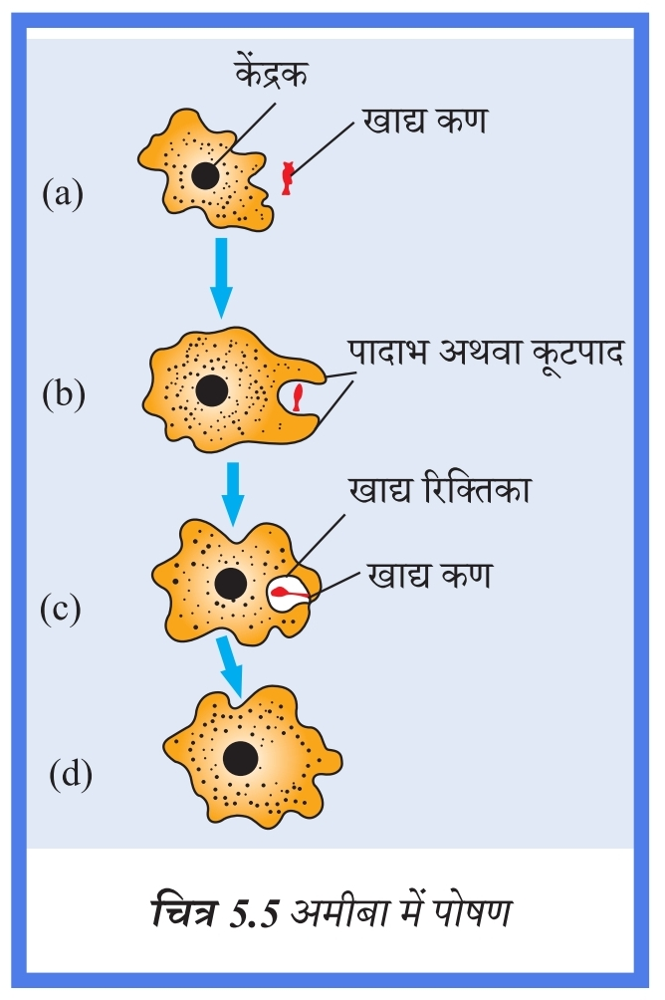
चित्र: अमीबा में पोषण (Nutrition in Amoeba)मनुष्य की आहार नाल (Alimentary Canal) मुँह से गुदा (Anus) तक विस्तृत एक लंबी नली है।
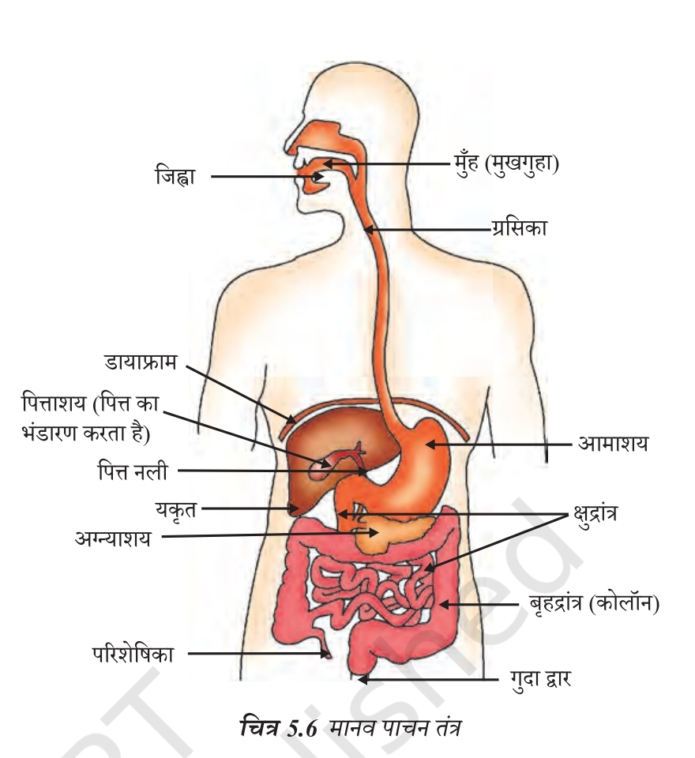
चित्र: मानव पाचन तंत्र (Human Digestive System)🍽️ पाचन के मुख्य अंग और उनके कार्य (Digestive Organs & Functions)
मुँह (Mouth)
दाँतों द्वारा भोजन को चबाया जाता है। लाला ग्रंथि (Salivary Gland) से निकलने वाला लार (Saliva) भोजन को गीला करता है।
ग्रसिका (Oesophagus)
भोजन को मुँह से आमाशय तक क्रमाकुंचक गति (Peristaltic Movement) द्वारा ले जाती है।
आमाशय (Stomach)
यहाँ जठर ग्रंथियाँ (Gastric Glands) होती हैं जो निम्नलिखित का स्रावण करती हैं:
- हाइड्रोक्लोरिक अम्ल (HCl): अम्लीय माध्यम तैयार करता है जो पेप्सिन की क्रिया में सहायक है।
- पेप्सिन (Pepsin): प्रोटीन पाचक एंजाइम है।
- श्लेष्मा (Mucus): आमाशय के आंतरिक आस्तर की अम्ल से रक्षा करता है।
क्षुद्रांत्र (Small Intestine)
यह आहारनाल का सबसे लंबा भाग और कार्बोहाइड्रेट, प्रोटीन तथा वसा के पूर्ण पाचन का स्थल है।
- यकृत (Liver): पित्तरस (Bile Juice) स्रावित करता है जो वसा की बड़ी गोलिकाओं को छोटी गोलिकाओं में खंडित (इमल्सीकरण - Emulsification) करता है और माध्यम को क्षारीय बनाता है।
- अग्न्याशय (Pancreas): अग्न्याशयिक रस स्रावित करता है, जिसमें प्रोटीन के लिए ट्रिप्सिन (Trypsin) और इमल्सीकृत वसा के लिए लाइपेज (Lipase) एंजाइम होते हैं।
- आंत्र रस (Intestinal Juice): अंत में प्रोटीन को अमीनो अम्ल, जटिल कार्बोहाइड्रेट को ग्लूकोज में तथा वसा को वसा अम्ल (Fatty Acids) व ग्लिसरॉल में बदल देता है।
- दीर्घरोम (Villi): क्षुद्रांत्र की भित्ति पर उंगली जैसे प्रवर्ध होते हैं जो अवशोषण (Absorption) का सतही क्षेत्रफल बढ़ाते हैं।
 चित्र: क्षुद्रांत्र की भित्ति तथा दीर्घरोम (Villi)
चित्र: क्षुद्रांत्र की भित्ति तथा दीर्घरोम (Villi)
बृहदांत्र (Large Intestine)
बिना पचा भोजन यहाँ भेजा जाता है जहाँ दीर्घरोम जल का अवशोषण (Water Absorption) कर लेते हैं और शेष वर्ज्य पदार्थ गुदा (Anus) द्वारा बाहर निकाल दिया जाता है।
📊 5.3.1 ग्लूकोज का विखंडन (Breakdown of Glucose Flowchart)
पायरुवेट (Pyruvate) [3-कार्बन अणु] + ऊर्जा
↓
O₂ की अनुपस्थिति में[यीस्ट में / In Yeast]
इथेनॉल + CO₂ + ऊर्जा
(2-कार्बन अणु)
↓
O₂ के अभाव में[हमारी पेशी कोशिका में]
लैक्टिक अम्ल + ऊर्जा
(3-कार्बन अणु) → (क्रैम्प का कारण)
↓
O₂ की उपस्थिति में[माइटोकॉन्ड्रिया में / Mitochondria]
CO₂ + जल (H₂O) + ऊर्जा
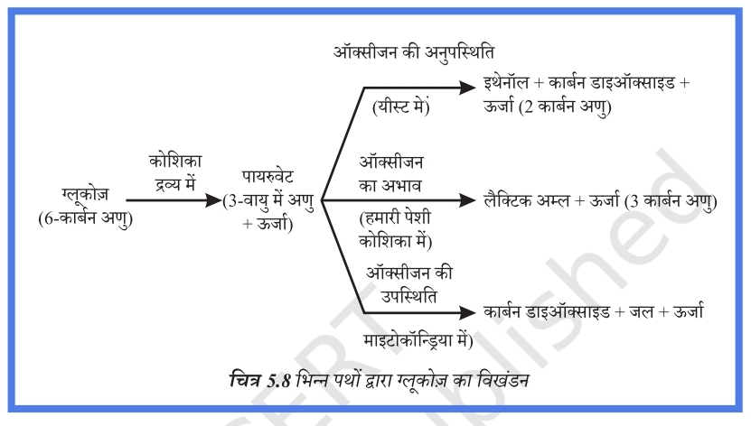
चित्र: ग्लूकोज का विखंडन (Breakdown of Glucose)🫁 5.3.2 मानव श्वसन तंत्र (Human Respiratory System)
- मार्ग (Path): नासाद्वार (Nostrils) → ग्रसनी (Pharynx) → कंठ (Larynx) → श्वासनली (Trachea) → श्वसनी (Bronchi) → श्वसनिका (Bronchioles) → कूपिका (Alveoli)।
- उपास्थि वलय (Rings of Cartilage): कंठ/श्वासनली में उपस्थित होते हैं ताकि वायु मार्ग निपतित (Collapse) न हो।
- कूपिका (Alveoli): फुफ्फुस (Lungs) के अंदर गुब्बारे जैसी रचना जो गैसों के विनिमय (Exchange of Gases) के लिए विस्तृत सतह उपलब्ध कराती है।
- श्वसन वर्णक (Respiratory Pigment): मानव में हीमोग्लोबिन (Haemoglobin) है, जो ऑक्सीजन के लिए उच्च बंधुता (High Affinity) रखता है और लाल रुधिर कणिकाओं (RBCs) में पाया जाता है। CO₂ जल में अधिक विलेय है, इसलिए इसका परिवहन रुधिर प्लाज्मा में विलीन अवस्था में होता है।
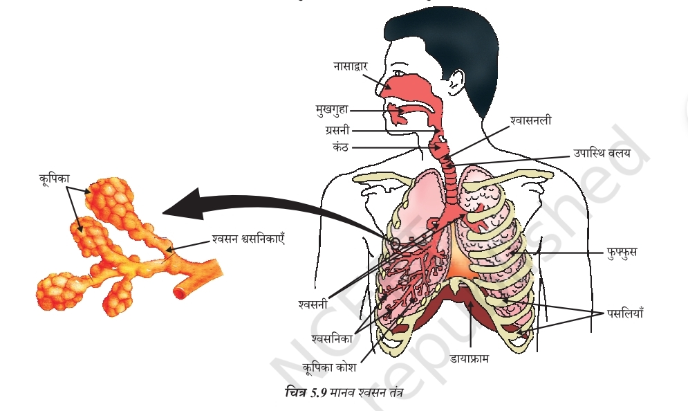
चित्र: मानव श्वसन तंत्र (Human Respiratory System)🩸 5.4.1 मानव में वहन (Transportation in Humans)
रुधिर (Blood) एक तरल संयोजी ऊतक (Fluid Connective Tissue) है जो भोजन, ऑक्सीजन और वर्ज्य पदार्थों का वहन करता है।
🫀 हमारा पंप – हृदय (The Heart)
- हृदय एक पेशीय अंग है जो हमारी मुट्ठी के आकार का होता है।
- कोष्ठ (Chambers): मानव हृदय 4 कोष्ठों में बंटा होता है (2 अलिंद - Atrium और 2 निलय - Ventricle) ताकि ऑक्सीजनित (Oxygenated) और विअक्सीजनित (Deoxygenated) रुधिर आपस में न मिलें।
- दोहरा परिसंचरण (Double Circulation): प्रत्येक चक्र में रुधिर हृदय में दो बार जाता है, इसे दोहरा परिसंचरण कहते हैं (स्तनधारियों और पक्षियों में उच्च ऊर्जा और शरीर का तापमान बनाए रखने के लिए आवश्यक है)।
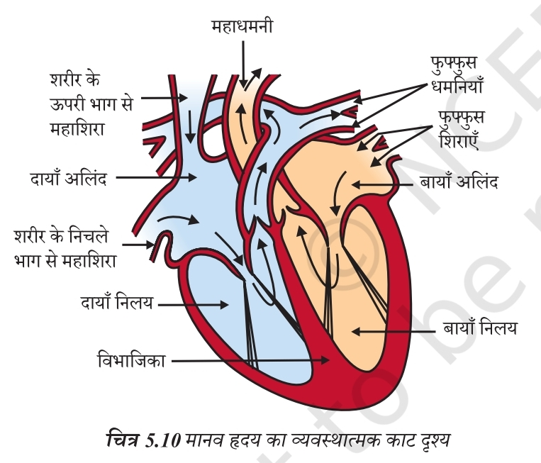
चित्र: मानव हृदय (Human Heart)🔀 रुधिर वाहिकाएं (Blood Vessels)
| विशेषता | धमनी (Artery) | शिरा (Vein) |
|---|---|---|
| कार्य | रुधिर को हृदय से शरीर के अंगों तक ले जाना। | रुधिर को अंगों से वापस हृदय तक लाना। |
| भित्ति (Wall) | मोटी तथा लचीली होती है (क्योंकि रुधिर उच्च दाब पर बहता है)। | पतली भित्ति होती है। |
| वाल्व (Valves) | वाल्व नहीं होते। | रुधिर को एक ही दिशा में भेजने के लिए वाल्व होते हैं। |
🪵 5.4.2 पादपों में परिवहन (Transportation in Plants)
पौधों में वहन के लिए दो स्वतंत्र संगठित चालन नलिकाएं होती हैं:
यह मृदा से प्राप्त जल और खनिज लवणों (Water & Minerals) का वहन करता है। इसमें वाष्पोत्सर्जन कर्षण (Transpiration Pull) मुख्य प्रेरक बल होता है।
यह पत्तियों से प्रकाश संश्लेषण के उत्पादों (भोजन / सुक्रोज) और अमीनो अम्ल को पौधे के अन्य भागों तक पहुँचाता है, जिसे स्थानांतरण (Translocation) कहते हैं। यह प्रक्रिया ATP से प्राप्त ऊर्जा का उपयोग करके होती है।
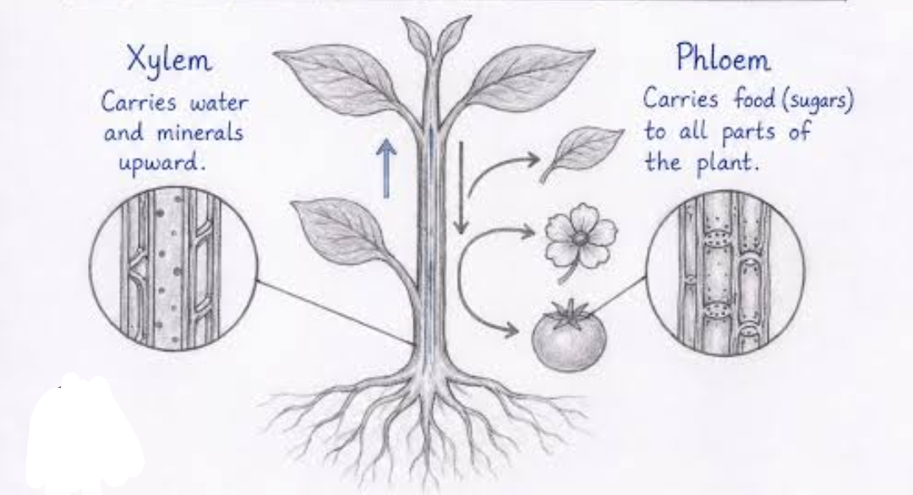
चित्र: पादपों में जाइलम एवं फ्लोएम का परिवहन🩺 5.5.1 मानव में उत्सर्जन तंत्र (Human Excretory System)
मानव उत्सर्जन तंत्र में निम्नलिखित अंग शामिल हैं:
- एक जोड़ा वृक्क (Pair of Kidneys): उदर में रीढ़ की हड्डी के दोनों ओर स्थित।
- मूत्रवाहिका (Ureters): वृक्क को मूत्राशय से जोड़ती हैं।
- मूत्राशय (Urinary Bladder): जहाँ मूत्र (Urine) भंडारित रहता है।
- मूत्रमार्ग (Urethra): जिसके द्वारा मूत्र बाहर निकलता है।
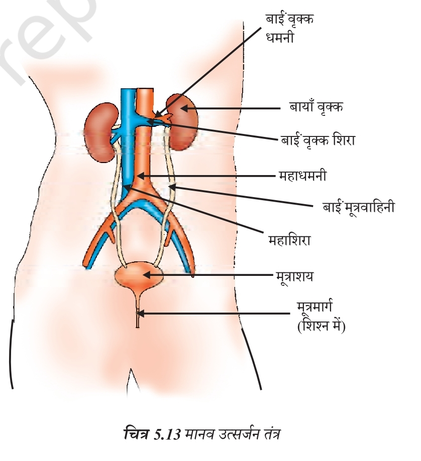
चित्र: मानव उत्सर्जन तंत्र (Human Excretory System)🧬 वृक्काणु (Nephron) की रचना और कार्यविधि
- वृक्क में आधारी निस्यंदन एकक (Filtration Unit) बहुत पतली भित्ति वाली रुधिर केशिकाओं का गुच्छ होता है, जिसे कोशिका गुच्छ (Glomerulus) कहते हैं।
- यह एक कप के आकार के सिरे के अंदर होता है जिसे बोमन संपुट (Bowman's Capsule) कहते हैं।
- चयनात्मक पुनरावशोषण (Selective Reabsorption): प्रारंभिक निस्यंद (Filtrate) में ग्लूकोज, अमीनो अम्ल, लवण और प्रचुर मात्रा में जल रह जाते हैं, जिनका नलिका में प्रवाहित होते समय पुनः अवशोषण हो जाता है।
- अपोहन (Dialysis / कृत्रिम वृक्क): वृक्क के निष्क्रिय होने की अवस्था में रुधिर से नाइट्रोजनी अपशिष्टों को अलग करने वाली एक कृत्रिम युक्ति है।
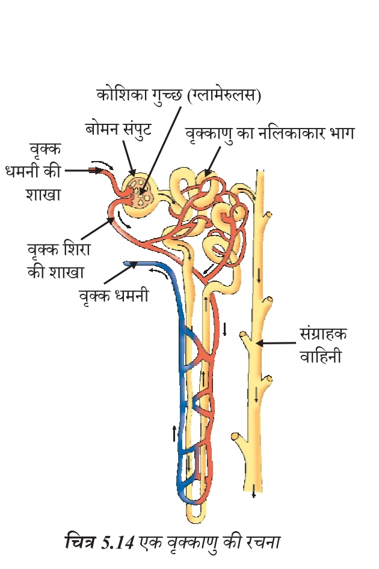
चित्र: वृक्काणु (Nephron)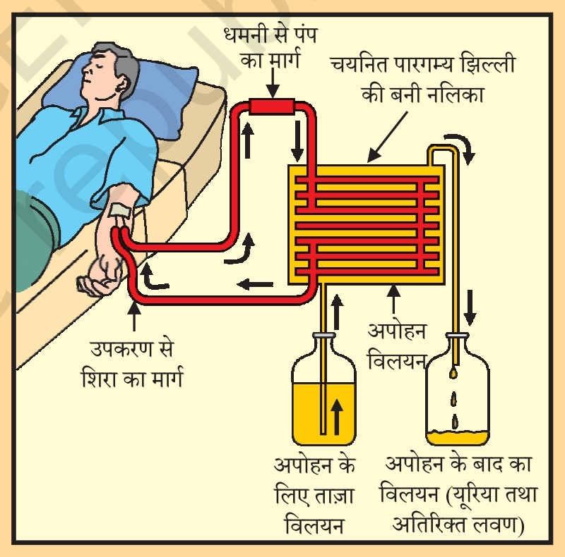
चित्र: अपोहन (Dialysis / Artificial Kidney)🍂 5.5.2 पादप में उत्सर्जन (Excretion in Plants)
पौधे अपशिष्ट पदार्थों से छुटकारा पाने के लिए निम्नलिखित तरीके अपनाते हैं:
- ऑक्सीजन (O₂): प्रकाश संश्लेषण का अपशिष्ट उत्पाद है जिसे रंध्रों द्वारा छोड़ा जाता है।
- अतिरिक्त जल: वाष्पोत्सर्जन (Transpiration) द्वारा बाहर निकाला जाता है।
- कोशिकीय रिक्तिका (Vacuoles): बहुत से अपशिष्ट उत्पाद इनमें संचित रहते हैं।
- पत्तियां: अपशिष्ट उत्पाद पुरानी पत्तियों में संचित होते हैं जो बाद में गिर जाती हैं।
- रेजिन तथा गोंद (Resins & Gums): पुराने जाइलम में संचित होते हैं।
- मृदा: कुछ अपशिष्ट पदार्थों को पौधे अपने आस-पास की मिट्टी में उत्सर्जित कर देते हैं।
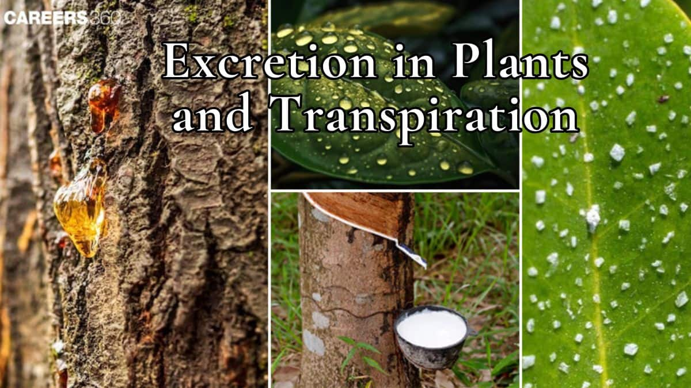
चित्र: पादप में उत्सर्जन (Excretion in Plants)भोजन एवं ऊर्जा का शरीर में लेना।
भोजन के विघटन से ऊर्जा प्राप्त करना।
भोजन, ऑक्सीजन एवं वर्ज्य पदार्थों का परिवहन।
हानिकारक अपशिष्ट पदार्थों को शरीर से बाहर निकालना।
जल एवं खनिज लवणों का वहन।
भोजन का स्थानांतरण।
वृक्क की आधारी निस्यंदन इकाई।
गैसों के विनिमय के लिए विस्तृत सतह।